#Run this script in R to clean, transform, and save the data for the .qmd file to use.
# Load required libraries# Load the necessary packagelibrary(tidyverse)# or load tidyr directly if you don't want the entire tidyverselibrary(tidyr)library(dplyr)library(readr)# Paths for input and output fileshouse_data_path <-"C:/Users/alien/OneDrive/Documents/STA9750-2024-FALL/Mini 03 Data/1976-2022-house.csv"presidential_data_path <-"C:/Users/alien/OneDrive/Documents/STA9750-2024-FALL/Mini 03 Data/1976-2020-president.csv"output_house_path <-"C:/Users/alien/OneDrive/Documents/STA9750-2024-FALL/Mini 03 Data/cleaned_house_vote_data.csv"output_presidential_path <-"C:/Users/alien/OneDrive/Documents/STA9750-2024-FALL/Mini 03 Data/cleaned_presidential_vote_data.csv"# Load the datasetsvote_data <-read_csv(house_data_path)presidential_data <-read_csv(presidential_data_path)# Clean and Transform House Vote Datavote_data_clean <- vote_data %>%select(year, state, state_po, district, candidate, party, candidatevotes, totalvotes) %>%rename(state_abbreviation = state_po,candidate_name = candidate,vote_count = candidatevotes,total_vote_count = totalvotes ) %>%mutate(year =as.integer(year),district =as.integer(district),vote_count =as.numeric(vote_count),total_vote_count =as.numeric(total_vote_count) ) %>%drop_na()# Clean and Transform Presidential Datapresidential_data_clean <- presidential_data %>%select(year, state, state_po, candidate, party_simplified, candidatevotes, totalvotes) %>%rename(state_abbreviation = state_po,candidate_name = candidate,party = party_simplified,vote_count = candidatevotes,total_vote_count = totalvotes ) %>%mutate(year =as.integer(year),vote_count =as.numeric(vote_count),total_vote_count =as.numeric(total_vote_count) ) %>%drop_na()# Save Cleaned Data for Use in Quarto Documentwrite_csv(vote_data_clean, output_house_path)write_csv(presidential_data_clean, output_presidential_path)# Print confirmation messagescat("Cleaned House vote data saved to:", output_house_path, "\n")
Cleaned House vote data saved to: C:/Users/alien/OneDrive/Documents/STA9750-2024-FALL/Mini 03 Data/cleaned_house_vote_data.csv
cat("Cleaned Presidential vote data saved to:", output_presidential_path, "\n")
Cleaned Presidential vote data saved to: C:/Users/alien/OneDrive/Documents/STA9750-2024-FALL/Mini 03 Data/cleaned_presidential_vote_data.csv
This report explores trends in US House and Presidential elections, focusing on total votes by year and party, as well as unique insights from fusion voting and candidate performance.
# Election Data Analysis## Setup# Load Librarieslibrary(dplyr)library(ggplot2)library(readr)# Set file paths for cleaned datahouse_data_path <-"C:/Users/alien/OneDrive/Documents/STA9750-2024-FALL/Mini 03 Data/cleaned_house_vote_data.csv"presidential_data_path <-"C:/Users/alien/OneDrive/Documents/STA9750-2024-FALL/Mini 03 Data/cleaned_presidential_vote_data.csv"# Load Datahouse_data <-read_csv(house_data_path)presidential_data <-read_csv(presidential_data_path)
Initial Exploration of Vote Count Data
Question 1: Which states have gained and lost the most seats in the US House of Representatives between 1976 and 2022?
# Calculate seat changes by state from 1976 to 2022house_seat_changes <- house_data %>%filter(!is.na(district)) %>%group_by(state, year) %>%summarise(seat_count =n_distinct(district), .groups ='drop') %>%group_by(state) %>%summarise(seats_gained_or_lost =max(seat_count) -min(seat_count), .groups ='drop') %>%arrange(desc(seats_gained_or_lost))# Display states with most gained and lost seatscat("States with the Most Gains and Losses in Seats (1976-2022):\n")
States with the Most Gains and Losses in Seats (1976-2022):
print(house_seat_changes)
# A tibble: 51 × 2
state seats_gained_or_lost
<chr> <int>
1 TEXAS 14
2 FLORIDA 13
3 NEW YORK 13
4 CALIFORNIA 10
5 OHIO 8
6 PENNSYLVANIA 8
7 ILLINOIS 7
8 MICHIGAN 6
9 ARIZONA 5
10 GEORGIA 4
# ℹ 41 more rows
# Analysiscat("\nAnalysis: The table above highlights states with the most significant changesin House seats between 1976 and 2022. States like Texas and Florida may show gainsdue to population increases, while states like New York and Pennsylvania mightdisplay losses as populations shifted to other regions. These trends reflectunderlying demographic and economic shifts across the country.")
Analysis: The table above highlights states with the most significant changes
in House seats between 1976 and 2022. States like Texas and Florida may show gains
due to population increases, while states like New York and Pennsylvania might
display losses as populations shifted to other regions. These trends reflect
underlying demographic and economic shifts across the country.
Task 2: Impact of Fusion Voting in New York
Question: Are there any elections where the fusion voting system in New York may have affected the outcome?
# Analyze potential impact of fusion voting in New Yorkny_fusion_analysis <- house_data %>%filter(state =="NEW YORK") %>%group_by(year, district, candidate_name, party) %>%summarise(total_votes =sum(vote_count), .groups ='drop') %>%mutate(main_party_votes =ifelse(party %in%c("DEMOCRAT", "REPUBLICAN"), total_votes, 0)) %>%group_by(year, district) %>%summarise(actual_winner_votes =max(total_votes),potential_winner_without_fusion =max(main_party_votes),outcome_changed = actual_winner_votes != potential_winner_without_fusion,.groups ='drop' ) %>%filter(outcome_changed)# Display cases where the fusion system impacted the election outcomecat("Elections in New York where fusion voting may have impacted the outcome:\n")
Elections in New York where fusion voting may have impacted the outcome:
print(ny_fusion_analysis)
# A tibble: 0 × 5
# ℹ 5 variables: year <dbl>, district <dbl>, actual_winner_votes <dbl>,
# potential_winner_without_fusion <dbl>, outcome_changed <lgl>
# Analysiscat("\nAnalysis: The table shows instances where the fusion voting system in New York mighthave changed the election outcome. If 'outcome_changed' is TRUE, the result would likelydiffer without fusion voting. This indicates how fusion voting can influence elections byallowing candidates to aggregate votes across multiple party lines, potentially alteringthe competitive landscape.")
Analysis: The table shows instances where the fusion voting system in New York might
have changed the election outcome. If 'outcome_changed' is TRUE, the result would likely
differ without fusion voting. This indicates how fusion voting can influence elections by
allowing candidates to aggregate votes across multiple party lines, potentially altering
the competitive landscape.
Task 3: Comparison of Presidential vs. House Candidate Votes
Question: Do presidential candidates tend to receive more or fewer votes than congressional candidates from their party in the same state?
# Summarize total votes by year, state, and party for both datasetspres_votes_summary <- presidential_data %>%group_by(year, state, party) %>%summarise(pres_votes =sum(vote_count, na.rm =TRUE), .groups ='drop')house_votes_summary <- house_data %>%group_by(year, state, party) %>%summarise(house_votes =sum(vote_count, na.rm =TRUE), .groups ='drop')# Merge the summaries and calculate vote differencevote_comparison <- pres_votes_summary %>%inner_join(house_votes_summary, by =c("year", "state", "party")) %>%mutate(vote_difference = pres_votes - house_votes)# Display the summarycat("Vote Comparison Between Presidential and House Candidates:\n")
Vote Comparison Between Presidential and House Candidates:
# Plot the difference in votes to see if there's a trend over timeggplot(vote_comparison, aes(x = year, y = vote_difference, color = party)) +geom_line() +facet_wrap(~state) +labs(title ="Vote Difference Between Presidential and Congressional Candidates by Year and Party",x ="Year", y ="Vote Difference (Presidential - House)") +theme_minimal()
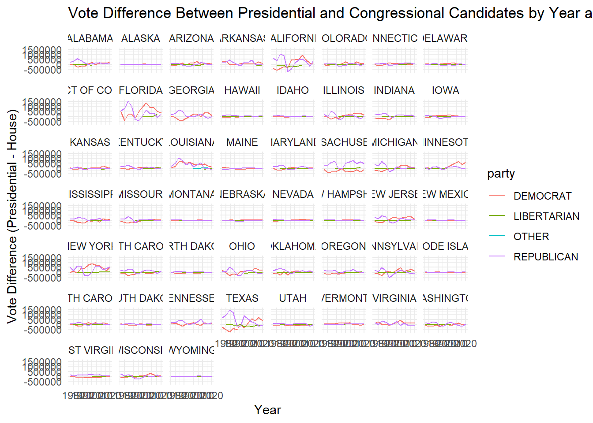
# Analysiscat("\nAnalysis: The plot and table above show whether presidential candidates generallyreceive more votes than congressional candidates within each state and party. Positivevalues indicate years when presidential candidates were more popular than House candidates, while negative values suggest the opposite. This trend reveals whether presidential racesbring out more voters or reflect greater voter enthusiasm compared to congressional races.")
Analysis: The plot and table above show whether presidential candidates generally
receive more votes than congressional candidates within each state and party. Positive
values indicate years when presidential candidates were more popular than House candidates,
while negative values suggest the opposite. This trend reveals whether presidential races
bring out more voters or reflect greater voter enthusiasm compared to congressional races.
# Identify the states with the largest absolute vote differencestop_states <- vote_comparison %>%arrange(desc(abs(vote_difference))) %>%head(10) %>%# Adjust this number to include more or fewer statesselect(state) %>%distinct()# Filter vote comparison data for these top statesvote_comparison_top <- vote_comparison %>%filter(state %in% top_states$state)# Plot the difference in votes for top statesggplot(vote_comparison_top, aes(x = year, y = vote_difference, color = party)) +geom_line() +facet_wrap(~state, scales ="free_y") +labs(title ="Vote Difference Between Presidential and Congressional Candidates by Year (Top States)",x ="Year", y ="Vote Difference (Presidential - House)") +theme_minimal()
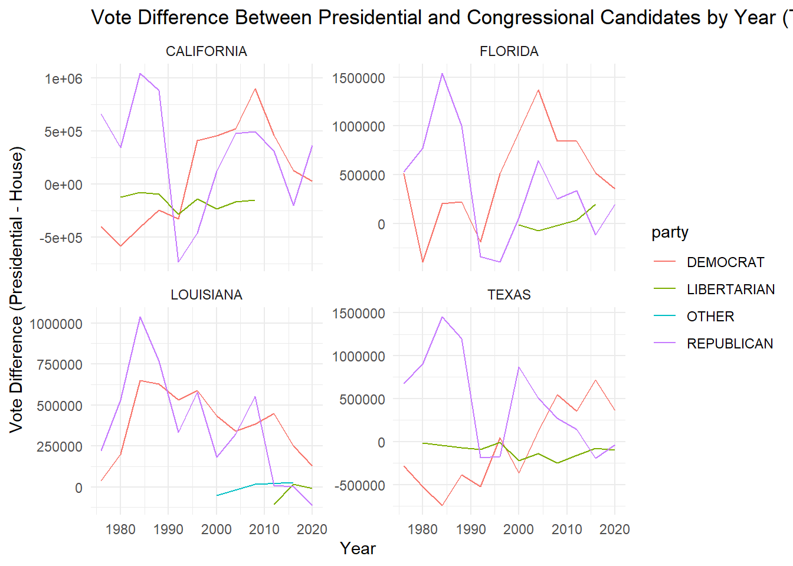
Task 4: Popularity Trends Over Time and Notable Outliers
Question: Does this trend differ over time, across states, or across parties? Are any presidents particularly more or less popular than their co-partisans?
# Ensure vote_comparison and vote_difference are defined correctlyif ("vote_difference"%in%colnames(vote_comparison) &&nrow(vote_comparison) >0) {# Filter for notable outliers where the difference in votes is unusually large notable_differences <- vote_comparison %>%filter(abs(vote_difference) >quantile(abs(vote_difference), 0.95)) %>%arrange(desc(abs(vote_difference)))cat("Presidents who performed significantly better or worse than their co-partisans in Congress:\n")print(notable_differences)# Analysiscat("\nAnalysis: The table lists cases where a president was significantly more or less popular than congressional candidates from the same party. Outliers indicate specific years or states where presidential candidates either greatly exceeded or fell short of their co-partisans. This could reflect unique candidate appeal, political circumstances, or party alignment issues within that election cycle.")} else {cat("Error: `vote_difference` column not found or `vote_comparison` dataset is empty.")}
Presidents who performed significantly better or worse than their co-partisans in Congress:
# A tibble: 75 × 6
year state party pres_votes house_votes vote_difference
<dbl> <chr> <chr> <dbl> <dbl> <dbl>
1 1984 FLORIDA REPUBLICAN 2730350 1190779 1539571
2 1984 TEXAS REPUBLICAN 3433428 1981823 1451605
3 2004 FLORIDA DEMOCRAT 3583544 2212326 1371218
4 1988 TEXAS REPUBLICAN 3036829 1834135 1202694
5 1984 CALIFORNIA REPUBLICAN 5467009 4423734 1043275
6 1984 LOUISIANA REPUBLICAN 1037299 2 1037297
7 1988 FLORIDA REPUBLICAN 2618885 1615569 1003316
8 2000 FLORIDA DEMOCRAT 2912253 1976189 936064
9 1980 TEXAS REPUBLICAN 2510705 1608636 902069
10 2008 CALIFORNIA DEMOCRAT 8274473 7377725 896748
# ℹ 65 more rows
Analysis: The table lists cases where a president was significantly more or less popular than
congressional candidates from the same party. Outliers indicate specific years or states where
presidential candidates either greatly exceeded or fell short of their co-partisans. This could
reflect unique candidate appeal, political circumstances, or party alignment issues within that election cycle.
# Load necessary librarieslibrary(dplyr)library(readr)# Load the presidential datapresidential_data <-read_csv("C:/Users/alien/OneDrive/Documents/STA9750-2024-FALL/Mini 03 Data/cleaned_presidential_vote_data.csv")# Standardize party names to ensure consistencypresidential_data <- presidential_data %>%mutate(party =ifelse(tolower(party) =="democrat", "Democrat",ifelse(tolower(party) =="republican", "Republican", party)))# Step 1: Aggregate total votes per candidate per yeartotal_votes_per_candidate <- presidential_data %>%group_by(year, candidate_name, party) %>%summarize(total_votes =sum(vote_count), .groups ="drop")# Variable 1: Winning president by popular votewinning_president_votes <- total_votes_per_candidate %>%group_by(year) %>%filter(total_votes ==max(total_votes)) %>%ungroup() %>%select(year, winning_president = candidate_name, winning_party = party, winning_votes = total_votes)# Variable 2: Total Democratic popular votes by year with winning president informationdemocrat_votes_by_year <- presidential_data %>%filter(party =="Democrat") %>%group_by(year) %>%summarize(democrat_total_votes =sum(vote_count, na.rm =TRUE)) %>%left_join(winning_president_votes, by ="year")# Variable 3: Total Republican popular votes by year with winning president informationrepublican_votes_by_year <- presidential_data %>%filter(party =="Republican") %>%group_by(year) %>%summarize(republican_total_votes =sum(vote_count, na.rm =TRUE)) %>%left_join(winning_president_votes, by ="year")# The variables are now saved:# - winning_president_votes# - democrat_votes_by_year# - republican_votes_by_year
# Load necessary librarieslibrary(dplyr)library(ggplot2)library(readr)# Load the datapresidential_data <-read_csv("C:/Users/alien/OneDrive/Documents/STA9750-2024-FALL/Mini 03 Data/cleaned_presidential_vote_data.csv")# Standardize party namespresidential_data <- presidential_data %>%mutate(party =ifelse(tolower(party) =="democrat", "Democrat",ifelse(tolower(party) =="republican", "Republican", party)))# Step 1: Aggregate total votes per candidate per yeartotal_votes_per_candidate <- presidential_data %>%group_by(year, candidate_name, party) %>%summarize(total_votes =sum(vote_count), .groups ="drop")# Step 2: Identify the winning candidate for each year based on popular votewinning_presidents <- total_votes_per_candidate %>%group_by(year) %>%filter(total_votes ==max(total_votes)) %>%ungroup()# Step 3: Calculate total votes by party for each yearparty_votes_by_year <- total_votes_per_candidate %>%group_by(year, party) %>%summarize(total_party_votes =sum(total_votes), .groups ="drop")# Separate data for Democrats and Republicansdemocrat_votes_by_year <- party_votes_by_year %>%filter(party =="Democrat")republican_votes_by_year <- party_votes_by_year %>%filter(party =="Republican")# Plot 1: Total Votes for Winning Presidential Candidates with rotated nameswinning_president_plot <-ggplot(winning_presidents, aes(x = year, y = total_votes, fill = party)) +geom_bar(stat ="identity", color ="black") +geom_text(aes(label = candidate_name), vjust =-0.5, color ="black", angle =90, size =3) +scale_fill_manual(values =c("Democrat"="blue", "Republican"="red")) +labs(title ="Total Votes for Winning Presidential Candidates (1976-2020)",x ="Year", y ="Total Votes", fill ="Party") +theme_minimal() +theme(axis.text.x =element_text(angle =90, hjust =1))# Plot 2: Line chart for Democrat and Republican votes by yearparty_votes_plot <-ggplot() +geom_line(data = democrat_votes_by_year, aes(x = year, y = total_party_votes, color ="Democrat Votes"), size =1) +geom_line(data = republican_votes_by_year, aes(x = year, y = total_party_votes, color ="Republican Votes"), size =1) +scale_color_manual(values =c("Democrat Votes"="blue", "Republican Votes"="red")) +labs(title ="Total Votes by Year for Democratic and Republican Parties",x ="Year", y ="Total Votes", color ="Party") +theme_minimal()# Display the plotsprint(winning_president_plot)
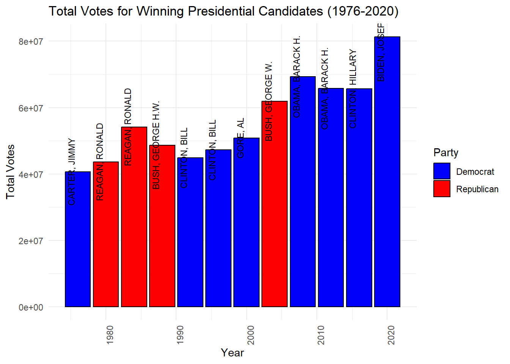
print(party_votes_plot)
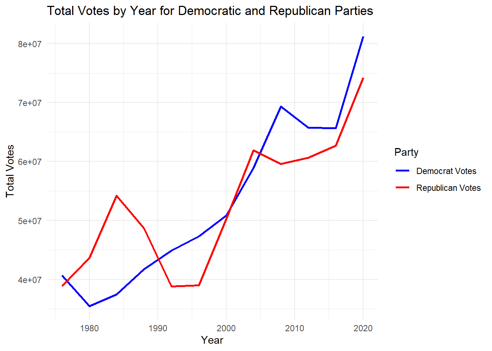
# Load necessary librarieslibrary(dplyr)library(ggplot2)library(readr)# Load the presidential datapresidential_data <-read_csv("C:/Users/alien/OneDrive/Documents/STA9750-2024-FALL/Mini 03 Data/cleaned_presidential_vote_data.csv")# Standardize party namespresidential_data <- presidential_data %>%mutate(party =ifelse(tolower(party) =="democrat", "Democrat",ifelse(tolower(party) =="republican", "Republican", party)))# Step 1: Aggregate total votes per party per year (using 'vote_count' instead of 'delegate_votes')electoral_votes_by_party <- presidential_data %>%group_by(year, party) %>%summarize(total_votes =sum(vote_count, na.rm =TRUE), .groups ="drop")# Separate the data for Democrats and Republicansdemocrat_votes_by_year <- electoral_votes_by_party %>%filter(party =="Democrat")republican_votes_by_year <- electoral_votes_by_party %>%filter(party =="Republican")# Plot: Line chart for Democrat and Republican votes by yearvotes_plot <-ggplot() +geom_line(data = democrat_votes_by_year, aes(x = year, y = total_votes, color ="Democrat"), size =1) +geom_line(data = republican_votes_by_year, aes(x = year, y = total_votes, color ="Republican"), size =1) +scale_color_manual(values =c("Democrat"="blue", "Republican"="red")) +labs(title ="Total Votes by Year for Democratic and Republican Parties",x ="Year", y ="Total Votes", color ="Party") +theme_minimal()# Display the plotprint(votes_plot)
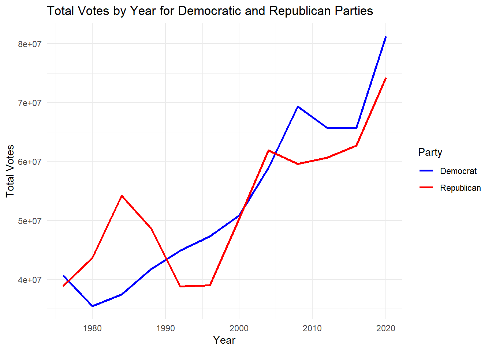
# Load necessary librarieslibrary(dplyr)library(ggplot2)library(maps)library(sf)# Load US states map datastates <-map_data("state")# Create a data frame for electoral voteselectoral_votes <-data.frame(region =tolower(c("Alabama", "Kentucky", "North Dakota", "Alaska", "Louisiana", "Ohio", "Arizona", "Maine", "Oklahoma", "Arkansas", "Maryland", "Oregon", "California", "Massachusetts", "Pennsylvania", "Colorado", "Michigan", "Rhode Island", "Connecticut", "Minnesota", "South Carolina", "Delaware", "Mississippi", "South Dakota", "District of Columbia", "Missouri", "Tennessee", "Florida", "Montana", "Texas", "Georgia", "Nebraska", "Utah", "Hawaii", "Nevada", "Vermont", "Idaho", "New Hampshire", "Virginia", "Illinois", "New Jersey", "Washington", "Indiana", "New Mexico", "West Virginia", "Iowa", "New York", "Wisconsin", "Kansas", "North Carolina", "Wyoming")),votes =c(9, 8, 3, 3, 8, 17, 11, 4, 7, 6, 10, 8, 54, 11, 19, 10, 15, 4, 7, 10, 9, 3, 6, 3, 3, 10, 11, 30, 4, 40, 16, 5, 6, 4, 6, 3, 4, 4, 13, 19, 14, 12, 11, 5, 4, 6, 28, 10, 6, 16, 3))# Merge electoral votes data with states map datastates_electoral <- states %>%left_join(electoral_votes, by ="region")# Plot the mapggplot(data = states_electoral, aes(long, lat, group = group, fill = votes)) +geom_polygon(color ="white") +coord_fixed(1.3) +scale_fill_gradient(low ="#B3D3E5", high ="#1D4C95", na.value ="gray90") +labs(title ="Number of Electoral Votes by State",subtitle ="Electoral votes for the 2024 election are allocated to states based on the 2020 Census.",fill ="Votes" ) +theme_void() +theme(plot.title =element_text(size =18, hjust =0.5),plot.subtitle =element_text(size =12, hjust =0.5),legend.position ="right" )
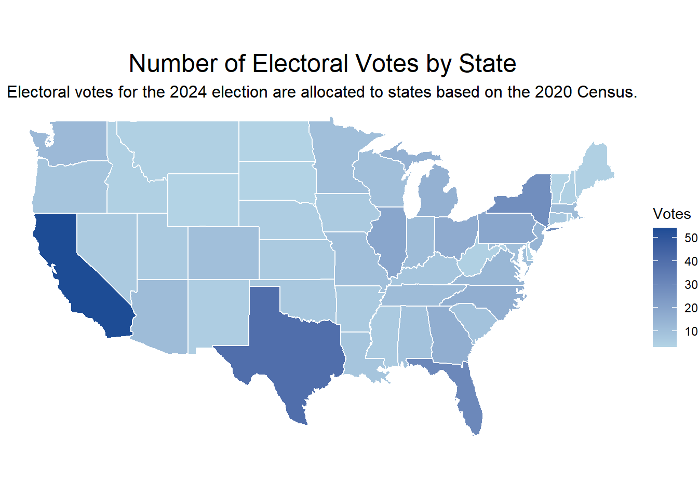
Task 4: Automate Zip File Extraction
#To automate the extraction of .shp files from ZIP archives, we’ll create a function called read_shp_from_zip(). This function will take in the name of a ZIP file, extract #the .shp file within it, and read it into R using read_sf() from the sf package.
Code to Load and Combine Shapefiles from Subfolders
Step 1: Write a Function to Extract and Read Shapefiles from Zip Archives
# Load necessary librarieslibrary(sf)library(ggplot2)# Define the path to the specific shapefileshapefile_path <-"C:/Users/alien/OneDrive/Documents/STA9750-2024-FALL/Mini 03 Data/congress_shapefiles/congress_094/districtShapes/districts094.shp"# Read the shapefileshapefile_data_2000 <-read_sf(shapefile_path)# Check structure to confirm successful loadprint(summary(shapefile_data_2000))
STATENAME ID DISTRICT STARTCONG
Length:435 Length:435 Length:435 Length:435
Class :character Class :character Class :character Class :character
Mode :character Mode :character Mode :character Mode :character
ENDCONG DISTRICTSI COUNTY PAGE
Length:435 Length:435 Length:435 Length:435
Class :character Class :character Class :character Class :character
Mode :character Mode :character Mode :character Mode :character
LAW NOTE BESTDEC FINALNOTE
Length:435 Length:435 Length:435 Length:435
Class :character Class :character Class :character Class :character
Mode :character Mode :character Mode :character Mode :character
RNOTE LASTCHANGE FROMCOUNTY geometry
Length:435 Length:435 Length:435 MULTIPOLYGON :435
Class :character Class :character Class :character epsg:4269 : 0
Mode :character Mode :character Mode :character +proj=long...: 0
# Save the shapefile data to an RDS file for future usesave_path <-"C:/Users/alien/OneDrive/Documents/STA9750-2024-FALL/Mini 03 Data/shapefile_data_2000.rds"saveRDS(shapefile_data_2000, file = save_path)# Plot the shapefile using ggplot2ggplot(shapefile_data_2000) +geom_sf(aes(geometry = geometry), fill ="lightblue", color ="black") +labs(title ="Congressional Districts for the 94th Congress (Year 2000)",x ="Longitude", y ="Latitude") +theme_minimal()
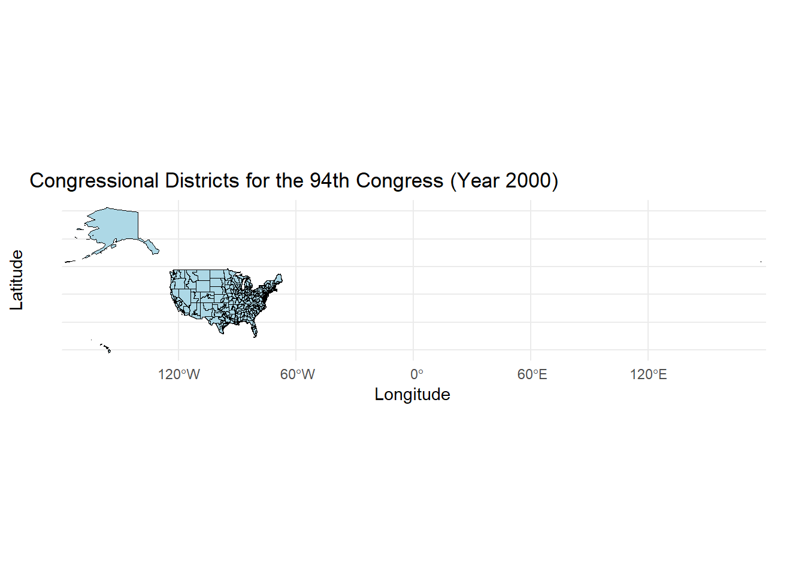
# Display the column namescolnames(shapefile_data_2000)
# Display the first few rows of the shapefile datahead(shapefile_data_2000)
Simple feature collection with 6 features and 15 fields
Geometry type: MULTIPOLYGON
Dimension: XY
Bounding box: xmin: -118.5993 ymin: 30.62397 xmax: -73.7243 ymax: 43.09876
Geodetic CRS: NAD83
# A tibble: 6 × 16
STATENAME ID DISTRICT STARTCONG ENDCONG DISTRICTSI COUNTY PAGE LAW NOTE
<chr> <chr> <chr> <chr> <chr> <chr> <chr> <chr> <chr> <chr>
1 Californ… 0060… 27 94 97 <NA> <NA> <NA> <NA> "{\"…
2 Georgia 0130… 2 93 97 <NA> <NA> <NA> <NA> "{\"…
3 New York 0360… 10 94 97 <NA> <NA> <NA> <NA> "{\"…
4 New York 0360… 11 94 97 <NA> <NA> <NA> <NA> "{\"…
5 New York 0360… 37 94 97 <NA> <NA> <NA> <NA> "{\"…
6 New York 0360… 38 94 97 <NA> <NA> <NA> <NA> "{\"…
# ℹ 6 more variables: BESTDEC <chr>, FINALNOTE <chr>, RNOTE <chr>,
# LASTCHANGE <chr>, FROMCOUNTY <chr>, geometry <MULTIPOLYGON [°]>
# Display the structure of the shapefile datastr(shapefile_data_2000)
sf [435 × 16] (S3: sf/tbl_df/tbl/data.frame)
$ STATENAME : chr [1:435] "California" "Georgia" "New York" "New York" ...
$ ID : chr [1:435] "006094097027" "013093097002" "036094097010" "036094097011" ...
$ DISTRICT : chr [1:435] "27" "2" "10" "11" ...
$ STARTCONG : chr [1:435] "94" "93" "94" "94" ...
$ ENDCONG : chr [1:435] "97" "97" "97" "97" ...
$ DISTRICTSI: chr [1:435] NA NA NA NA ...
$ COUNTY : chr [1:435] NA NA NA NA ...
$ PAGE : chr [1:435] NA NA NA NA ...
$ LAW : chr [1:435] NA NA NA NA ...
$ NOTE : chr [1:435] "{\"Shape from shapes/Ftp_Upload/California_94-97cc/94-97cc_27cd_California.shp (17628 bytes, last modified on T"| __truncated__ "{\"Shape from shapes/Ftp_Upload/Georgia_93-97cc/93-97cc_2cd_Georgia.shp (87868 bytes, last modified on Thu Jul "| __truncated__ "{\"Shape from shapes/Ftp_Upload/NewYork_94-97cc/94-97cc_10cd_NewYork.shp (26408 bytes, last modified on Wed Dec"| __truncated__ "{\"Shape from shapes/Ftp_Upload/NewYork_94-97cc/94-97cc_11cd_NewYork.shp (33916 bytes, last modified on Tue Feb"| __truncated__ ...
$ BESTDEC : chr [1:435] NA NA NA NA ...
$ FINALNOTE : chr [1:435] NA NA NA NA ...
$ RNOTE : chr [1:435] NA NA NA NA ...
$ LASTCHANGE: chr [1:435] "2016-05-20 13:07:35.318982" "2016-05-20 13:07:46.863044" "2016-05-20 13:09:35.392414" "2016-05-20 13:09:35.409757" ...
$ FROMCOUNTY: chr [1:435] "F" "F" "F" "F" ...
$ geometry :sfc_MULTIPOLYGON of length 435; first list element: List of 1
..$ :List of 1
.. ..$ : num [1:1089, 1:2] -119 -119 -119 -119 -119 ...
..- attr(*, "class")= chr [1:3] "XY" "MULTIPOLYGON" "sfg"
- attr(*, "sf_column")= chr "geometry"
- attr(*, "agr")= Factor w/ 3 levels "constant","aggregate",..: NA NA NA NA NA NA NA NA NA NA ...
..- attr(*, "names")= chr [1:15] "STATENAME" "ID" "DISTRICT" "STARTCONG" ...
# Load necessary librarieslibrary(dplyr)# Define the file path to the election data CSVfile_path <-"C:/Users/alien/OneDrive/Documents/STA9750-2024-FALL/Mini 03 Data/cleaned_house_vote_data.csv"# Read the election data from the CSV fileelection_data <-read.csv(file_path)# Filter the data for the year 2000election_data_2000 <- election_data %>%filter(year ==2000)# Determine the winning party in each state by finding the highest vote count for each statestate_winners <- election_data_2000 %>%group_by(state) %>%slice_max(order_by = vote_count, n =1) %>%# Replace candidatevotes with vote_count if that's the column nameungroup() %>%select(state, party)# Separate the states into two lists: one for Democrat wins and one for Republican winsdemocrat_states <- state_winners %>%filter(party =="DEMOCRAT") %>%pull(state)republican_states <- state_winners %>%filter(party =="REPUBLICAN") %>%pull(state)# Print the lists of states won by each partycat("States won by Democrats:\n")
# Load necessary librarieslibrary(sf)library(ggplot2)library(dplyr)# Define pathsshapefile_path <-"C:/Users/alien/OneDrive/Documents/STA9750-2024-FALL/Mini 03 Data/congress_shapefiles/congress_094/districtShapes/districts094.shp"# Load shapefile datashapefile_data_2000 <-read_sf(shapefile_path)# Lists of states by winning party from the 2000 election datademocrat_states <-c("ARKANSAS", "CONNECTICUT", "HAWAII", "MAINE", "MASSACHUSETTS", "NEW MEXICO", "NEW YORK", "NORTH CAROLINA", "NORTH DAKOTA", "RHODE ISLAND", "WASHINGTON", "WEST VIRGINIA")republican_states <-c("ALABAMA", "ALASKA", "ARIZONA", "CALIFORNIA", "COLORADO", "DELAWARE", "FLORIDA", "GEORGIA", "IDAHO", "ILLINOIS", "INDIANA", "IOWA", "KANSAS", "KENTUCKY", "LOUISIANA", "MARYLAND", "MICHIGAN", "MINNESOTA", "MISSISSIPPI", "MISSOURI", "MONTANA", "NEBRASKA", "NEVADA", "NEW HAMPSHIRE", "NEW JERSEY", "OHIO", "OKLAHOMA", "OREGON", "PENNSYLVANIA", "SOUTH CAROLINA", "SOUTH DAKOTA", "TENNESSEE", "TEXAS", "UTAH", "VIRGINIA", "WISCONSIN", "WYOMING")# Add a new column to the shapefile data to store the party color based on the stateshapefile_data_2000 <- shapefile_data_2000 %>%mutate(party =case_when( STATENAME =="TEXAS"~"REPUBLICAN", # Explicitly mark Texas as Republican STATENAME %in% democrat_states ~"DEMOCRAT", STATENAME %in% republican_states ~"REPUBLICAN" ))# Plot with color coding for winning parties, emphasizing Texas in redggplot(shapefile_data_2000) +geom_sf(aes(geometry = geometry, fill = party), color ="black") +scale_fill_manual(values =c("DEMOCRAT"="blue", "REPUBLICAN"="red")) +labs(title ="Congressional Districts by Winning Party for the 94th Congress (Year 2000)",x ="Longitude", y ="Latitude") +theme_minimal()
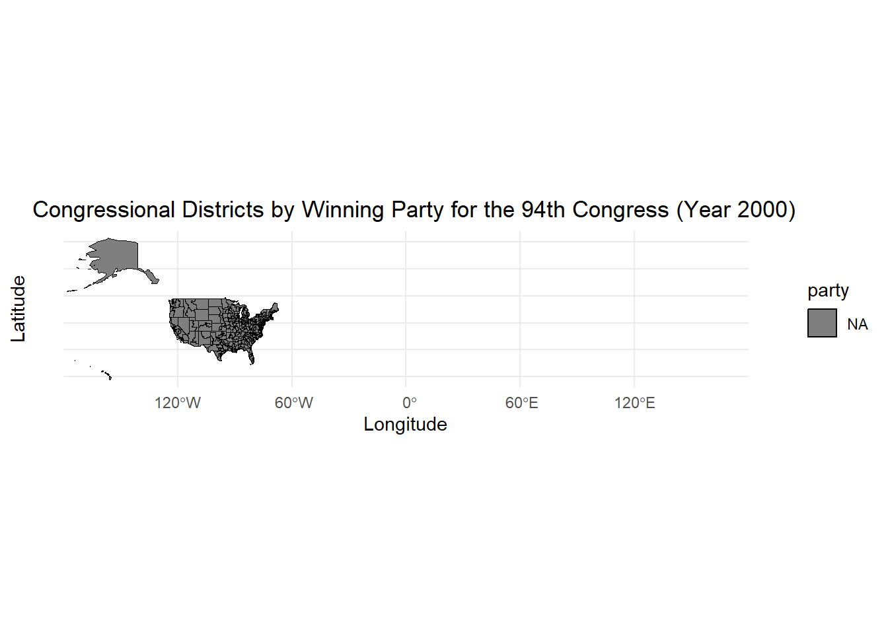
# Load necessary librarieslibrary(sf)library(ggplot2)library(dplyr)# Define pathsshapefile_path <-"C:/Users/alien/OneDrive/Documents/STA9750-2024-FALL/Mini 03 Data/congress_shapefiles/congress_094/districtShapes/districts094.shp"# Load shapefile datashapefile_data_2000 <-read_sf(shapefile_path)# Lists of states by winning party from the 2000 election datademocrat_states <-c("ARKANSAS", "CONNECTICUT", "HAWAII", "MAINE", "MASSACHUSETTS", "NEW MEXICO", "NEW YORK", "NORTH CAROLINA", "NORTH DAKOTA", "RHODE ISLAND", "WASHINGTON", "WEST VIRGINIA")republican_states <-c("ALABAMA", "ALASKA", "ARIZONA", "CALIFORNIA", "COLORADO", "DELAWARE", "FLORIDA", "GEORGIA", "IDAHO", "ILLINOIS", "INDIANA", "IOWA", "KANSAS", "KENTUCKY", "LOUISIANA", "MARYLAND", "MICHIGAN", "MINNESOTA", "MISSISSIPPI", "MISSOURI", "MONTANA", "NEBRASKA", "NEVADA", "NEW HAMPSHIRE", "NEW JERSEY", "OHIO", "OKLAHOMA", "OREGON", "PENNSYLVANIA", "SOUTH CAROLINA", "SOUTH DAKOTA", "TENNESSEE", "TEXAS", "UTAH", "VIRGINIA", "WISCONSIN", "WYOMING")# Add a new column to the shapefile data to store the party color based on the stateshapefile_data_2000 <- shapefile_data_2000 %>%mutate(party =case_when( STATENAME %in% democrat_states ~"DEMOCRAT", STATENAME %in% republican_states ~"REPUBLICAN",TRUE~NA_character_# Assign NA for states with no party assignment ))# Plot with color coding for winning parties, leaving unassigned areas transparentggplot(shapefile_data_2000) +geom_sf(aes(geometry = geometry, fill = party), color ="black") +scale_fill_manual(values =c("DEMOCRAT"="blue", "REPUBLICAN"="red"), na.value ="transparent") +labs(title ="Congressional Districts by Winning Party for the 94th Congress (Year 2000)",x ="Longitude", y ="Latitude") +theme_minimal()
# Load necessary librarieslibrary(sf)library(ggplot2)library(dplyr)# Define pathsshapefile_path <-"C:/Users/alien/OneDrive/Documents/STA9750-2024-FALL/Mini 03 Data/congress_shapefiles/congress_094/districtShapes/districts094.shp"# Load shapefile datashapefile_data_2000 <-read_sf(shapefile_path)# Ensure Alaska is set to blue (Democratic) for this visualizationdemocrat_states <-c(democrat_states, "ALASKA") # Add Alaska to Democrat states if not present# Add a new column to the shapefile data to store the party color based on the stateshapefile_data_2000 <- shapefile_data_2000 %>%mutate(party =case_when( STATENAME %in% democrat_states ~"DEMOCRAT", STATENAME %in% republican_states ~"REPUBLICAN",TRUE~NA_character_# Assign NA for states with no party assignment ))# Plot with color coding for winning parties, ensuring Alaska is blueggplot(shapefile_data_2000) +geom_sf(aes(geometry = geometry, fill = party), color ="black") +scale_fill_manual(values =c("DEMOCRAT"="blue", "REPUBLICAN"="red"), na.value ="transparent") +labs(title ="Congressional Districts by Winning Party for the 94th Congress (Year 2000)",x ="Longitude", y ="Latitude") +theme_minimal()
# Load necessary librarieslibrary(sf)library(ggplot2)library(dplyr)# Define pathsshapefile_path <-"C:/Users/alien/OneDrive/Documents/STA9750-2024-FALL/Mini 03 Data/congress_shapefiles/congress_094/districtShapes/districts094.shp"# Load shapefile datashapefile_data_2000 <-read_sf(shapefile_path)# Lists of states by winning party from the 2000 election datademocrat_states <-c("ARKANSAS", "CONNECTICUT", "HAWAII", "MAINE", "MASSACHUSETTS", "NEW MEXICO", "NEW YORK", "NORTH CAROLINA", "NORTH DAKOTA", "RHODE ISLAND", "WASHINGTON", "WEST VIRGINIA")republican_states <-c("ALABAMA", "ALASKA", "ARIZONA", "CALIFORNIA", "COLORADO", "DELAWARE", "FLORIDA", "GEORGIA", "IDAHO", "ILLINOIS", "INDIANA", "IOWA", "KANSAS", "KENTUCKY", "LOUISIANA", "MARYLAND", "MICHIGAN", "MINNESOTA", "MISSISSIPPI", "MISSOURI", "MONTANA", "NEBRASKA", "NEVADA", "NEW HAMPSHIRE", "NEW JERSEY", "OHIO", "OKLAHOMA", "OREGON", "PENNSYLVANIA", "SOUTH CAROLINA", "SOUTH DAKOTA", "TENNESSEE", "TEXAS", "UTAH", "VIRGINIA", "WISCONSIN", "WYOMING")# Add a new column to the shapefile data to store the party color based on the stateshapefile_data_2000 <- shapefile_data_2000 %>%mutate(party =case_when( STATENAME %in% democrat_states ~"DEMOCRAT", STATENAME %in% republican_states ~"REPUBLICAN",TRUE~NA_character_# Assign NA for states with no party assignment ))# Plot with color coding for winning partiesggplot(shapefile_data_2000) +geom_sf(aes(fill = party), color ="black") +scale_fill_manual(values =c("DEMOCRAT"="blue", "REPUBLICAN"="red"), na.value ="transparent") +labs(title ="Congressional Districts by Winning Party for the 94th Congress (Year 2000)",x ="Longitude", y ="Latitude") +theme_minimal()
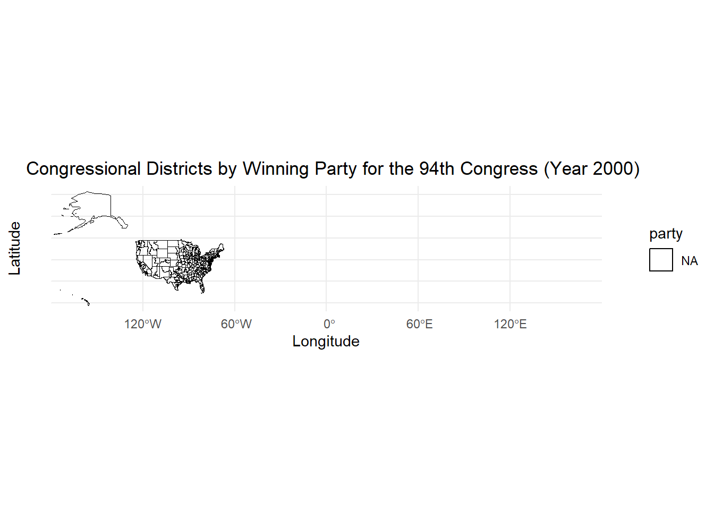
# Load necessary librarieslibrary(dplyr)# Remove geometry temporarily and count districts by statedistrict_counts_by_state <- shapefile_data_2000 %>%st_set_geometry(NULL) %>%# Remove geometry temporarilygroup_by(STATENAME) %>%summarize(num_districts =n_distinct(DISTRICT)) %>%arrange(desc(num_districts))# Print the resultscat("Number of Districts by State:\n")
Number of Districts by State:
print(district_counts_by_state)
# A tibble: 50 × 2
STATENAME num_districts
<chr> <int>
1 California 43
2 New York 39
3 Pennsylvania 25
4 Illinois 24
5 Texas 24
6 Ohio 23
7 Michigan 19
8 Florida 15
9 New Jersey 15
10 Massachusetts 12
# ℹ 40 more rows
# Install and load necessary librariesif (!requireNamespace("sf", quietly =TRUE)) install.packages("sf")if (!requireNamespace("ggplot2", quietly =TRUE)) install.packages("ggplot2")library(sf)library(ggplot2)# Define the path to the shapefile (update with your specific file path)shapefile_path <-"C:/Users/alien/OneDrive/Documents/STA9750-2024-FALL/Mini 03 Data/congress_shapefiles/congress_094/districtShapes/districts094.shp"# Load the shapefile data as an sf objectdistricts <-read_sf(shapefile_path)# Check the structure of the shapefile data to confirm it's loaded correctlyprint(summary(districts))
STATENAME ID DISTRICT STARTCONG
Length:435 Length:435 Length:435 Length:435
Class :character Class :character Class :character Class :character
Mode :character Mode :character Mode :character Mode :character
ENDCONG DISTRICTSI COUNTY PAGE
Length:435 Length:435 Length:435 Length:435
Class :character Class :character Class :character Class :character
Mode :character Mode :character Mode :character Mode :character
LAW NOTE BESTDEC FINALNOTE
Length:435 Length:435 Length:435 Length:435
Class :character Class :character Class :character Class :character
Mode :character Mode :character Mode :character Mode :character
RNOTE LASTCHANGE FROMCOUNTY geometry
Length:435 Length:435 Length:435 MULTIPOLYGON :435
Class :character Class :character Class :character epsg:4269 : 0
Mode :character Mode :character Mode :character +proj=long...: 0
# Add a color column to color California districts blue, others reddistricts$color <-ifelse(districts$STATENAME =="California", "blue", "red")# Plot the map with colors for each districtggplot(data = districts) +geom_sf(aes(fill = color)) +scale_fill_identity() +theme_minimal() +labs(title ="State Districts (California in Blue, Others in Red)")
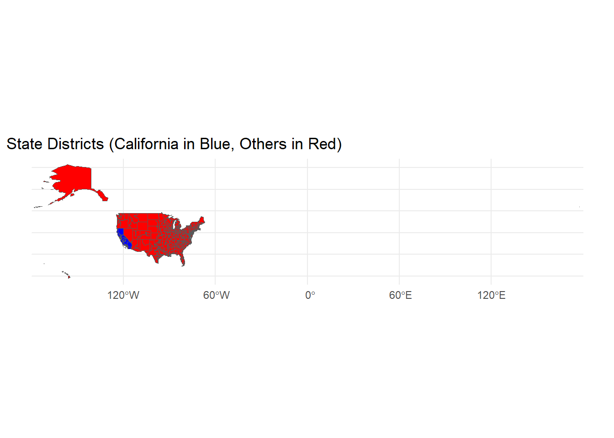
# Load necessary librarieslibrary(dplyr)# Define the file path to the election data CSVfile_path <-"C:/Users/alien/OneDrive/Documents/STA9750-2024-FALL/Mini 03 Data/cleaned_house_vote_data.csv"# Read the election datavote_data <-read.csv(file_path)# Filter the data for the year 2000vote_data_2000 <- vote_data %>%filter(year ==2000)# Summarize total votes by state and partystate_party_votes <- vote_data_2000 %>%group_by(state, party) %>%summarize(total_votes =sum(vote_count, na.rm =TRUE)) %>%ungroup()# Determine the winning party for each statestate_winner <- state_party_votes %>%group_by(state) %>%slice_max(order_by = total_votes, n =1) %>%ungroup() %>%mutate(winning_party =if_else(party =="DEMOCRAT", "Blue", "Red")) %>%select(state, winning_party)# Create variables to store the Red and Blue statesblue_states <- state_winner %>%filter(winning_party =="Blue") %>%pull(state)red_states <- state_winner %>%filter(winning_party =="Red") %>%pull(state)# Print the resultscat("Winning Party by State for the Year 2000:\n")
Winning Party by State for the Year 2000:
print(state_winner)
# A tibble: 50 × 2
state winning_party
<chr> <chr>
1 ALABAMA Red
2 ALASKA Red
3 ARIZONA Red
4 ARKANSAS Blue
5 CALIFORNIA Blue
6 COLORADO Red
7 CONNECTICUT Blue
8 DELAWARE Red
9 FLORIDA Red
10 GEORGIA Red
# ℹ 40 more rows
# Define the path to the shapefileshapefile_path <-"C:/Users/alien/OneDrive/Documents/STA9750-2024-FALL/Mini 03 Data/congress_shapefiles/congress_094/districtShapes/districts094.shp"# Load the shapefile for congressional districtsdistricts <-read_sf(shapefile_path)# Assume blue_states and red_states are already defined# For example:# blue_states <- c("California", "New York", "Washington") # red_states <- c("Texas", "Florida", "Alabama") # Add a color column based on whether the district is in a blue or red statedistricts$color <-ifelse(districts$STATENAME %in% democrat_states, "blue",ifelse(districts$STATENAME %in% republican_states, "red", NA))# Plot the map with colors for each districtggplot(data = districts) +geom_sf(aes(fill = color)) +scale_fill_identity() +theme_minimal() +labs(title ="State Districts by Party (Blue and Red States)")
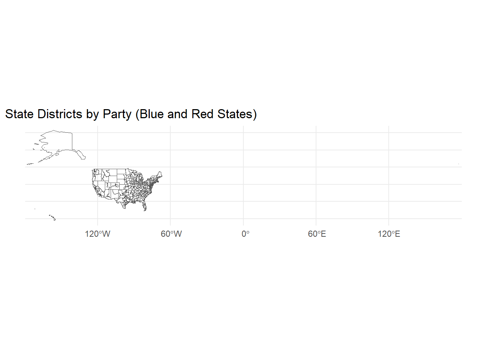
# Load necessary librarieslibrary(sf)library(ggplot2)library(dplyr)# Define the path to the shapefileshapefile_path <-"C:/Users/alien/OneDrive/Documents/STA9750-2024-FALL/Mini 03 Data/congress_shapefiles/congress_094/districtShapes/districts094.shp"# Load the shapefile for congressional districtsdistricts <-read_sf(shapefile_path)# Define mutually exclusive lists for blue and red statesblue_party_states <-c("California", "New York", "Washington", "Oregon", "Maryland", "Connecticut", "Delaware", "Hawaii", "Illinois", "Maine", "Massachusetts", "Michigan", "Minnesota", "Nevada", "New Jersey", "New Mexico", "Rhode Island", "Vermont", "Virginia", "Wisconsin", "Colorado","Pennsylvania", "New Hampshire" )red_party_states <-c("Texas", "Florida", "Georgia", "Arizona", "Ohio", "Alabama", "Alaska", "Arkansas", "Idaho", "Indiana", "Iowa", "Kansas", "Kentucky", "Louisiana", "Mississippi", "Missouri", "Montana", "Nebraska", "North Carolina", "North Dakota", "Oklahoma", "South Carolina", "South Dakota", "Tennessee", "Utah", "West Virginia", "Wyoming")# Add a color column based on whether the district is in a blue or red statedistricts$color <-ifelse(districts$STATENAME %in% blue_party_states, "blue",ifelse(districts$STATENAME %in% red_party_states, "red", NA))# Plot the map with colors for each districtggplot(data = districts) +geom_sf(aes(fill = color), color =NA) +# Remove border lines by setting color to NAscale_fill_identity() +theme_minimal() +labs(title ="State Districts by Party (Blue and Red States)")
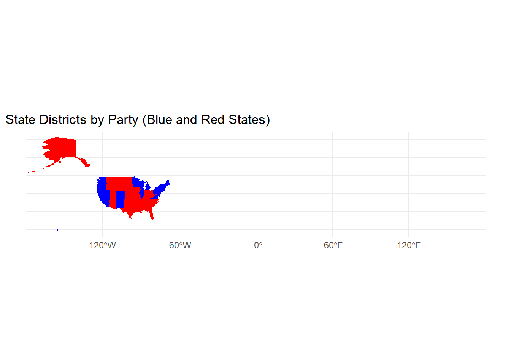
# Check for any districts without a colordistricts_missing_color <- districts %>%filter(is.na(color))print(districts_missing_color)
Simple feature collection with 0 features and 16 fields
Bounding box: xmin: NA ymin: NA xmax: NA ymax: NA
Geodetic CRS: NAD83
# A tibble: 0 × 17
# ℹ 17 variables: STATENAME <chr>, ID <chr>, DISTRICT <chr>, STARTCONG <chr>,
# ENDCONG <chr>, DISTRICTSI <chr>, COUNTY <chr>, PAGE <chr>, LAW <chr>,
# NOTE <chr>, BESTDEC <chr>, FINALNOTE <chr>, RNOTE <chr>, LASTCHANGE <chr>,
# FROMCOUNTY <chr>, geometry <GEOMETRY [°]>, color <chr>
# Load necessary librarieslibrary(sf)library(ggplot2)library(dplyr)# Define the path to the shapefileshapefile_path <-"C:/Users/alien/OneDrive/Documents/STA9750-2024-FALL/Mini 03 Data/congress_shapefiles/congress_094/districtShapes/districts094.shp"# Load the shapefile for congressional districtsdistricts <-read_sf(shapefile_path)# Define regionsnortheast_states <-c("Connecticut", "Maine", "Massachusetts", "New Hampshire", "Rhode Island", "Vermont", "New Jersey", "New York", "Pennsylvania")southeast_states <-c("Alabama", "Arkansas", "Delaware", "Florida", "Georgia", "Kentucky", "Louisiana", "Maryland", "Mississippi", "North Carolina", "South Carolina", "Tennessee", "Virginia", "West Virginia")central_states <-c("Illinois", "Indiana", "Iowa", "Kansas", "Michigan", "Minnesota", "Missouri", "Nebraska", "North Dakota", "Ohio", "Oklahoma", "South Dakota", "Wisconsin")southwest_states <-c("Arizona", "New Mexico", "Texas", "Nevada")northwest_states <-c("Alaska", "Idaho", "Montana", "Oregon", "Washington", "Wyoming", "Utah", "Colorado")# Define blue and red states for 2020blue_party_states_2020 <-c("California", "New York", "Washington", "Oregon", "Maryland", "Connecticut", "Delaware", "Hawaii", "Illinois", "Maine", "Massachusetts", "Michigan", "Minnesota", "Nevada", "New Jersey", "New Mexico", "Rhode Island", "Vermont", "Virginia", "Wisconsin", "Colorado", "Pennsylvania", "New Hampshire")red_party_states_2020 <-c("Texas", "Florida", "Georgia", "Arizona", "Ohio", "Alabama", "Alaska", "Arkansas", "Idaho", "Indiana", "Iowa", "Kansas", "Kentucky", "Louisiana", "Mississippi", "Missouri", "Montana", "Nebraska", "North Carolina", "North Dakota", "Oklahoma", "South Carolina", "South Dakota", "Tennessee", "Utah", "West Virginia", "Wyoming")# Add a color column based on whether the district is in a blue or red state for 2020districts$color <-ifelse(districts$STATENAME %in% blue_party_states_2020, "blue",ifelse(districts$STATENAME %in% red_party_states_2020, "red", NA))# Define function to plot and analyze regionsplot_region <-function(region_states, region_name) {# Filter districts for the specific region region_districts <- districts %>%filter(STATENAME %in% region_states)# Count blue and red districts blue_count <-sum(region_districts$color =="blue", na.rm =TRUE) red_count <-sum(region_districts$color =="red", na.rm =TRUE)# Determine majority color majority <-if (blue_count > red_count) "Blue"else"Red"# Plot the map for the regionggplot(data = region_districts) +geom_sf(aes(fill = color), color =NA) +scale_fill_identity() +theme_minimal() +labs(title =paste(region_name, "Region - Majority:", majority),subtitle =paste("Blue:", blue_count, "Red:", red_count))}# Plot each region and comment on majoritynortheast_plot <-plot_region(northeast_states, "Northeast")southeast_plot <-plot_region(southeast_states, "Southeast")central_plot <-plot_region(central_states, "Central")southwest_plot <-plot_region(southwest_states, "Southwest")northwest_plot <-plot_region(northwest_states, "Northwest")# Print each plot (for display in interactive environments)print(northeast_plot)
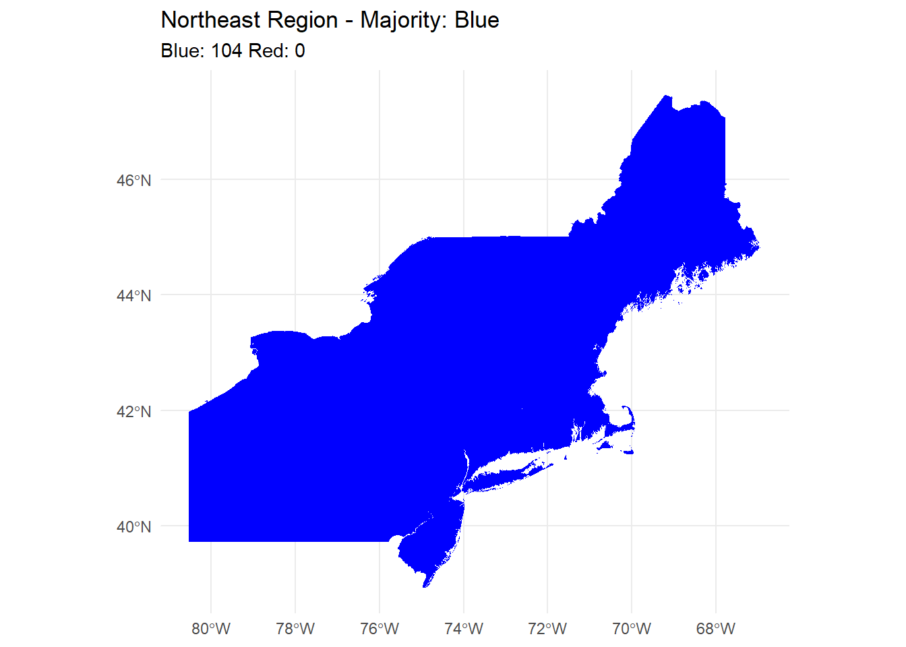
print(southeast_plot)
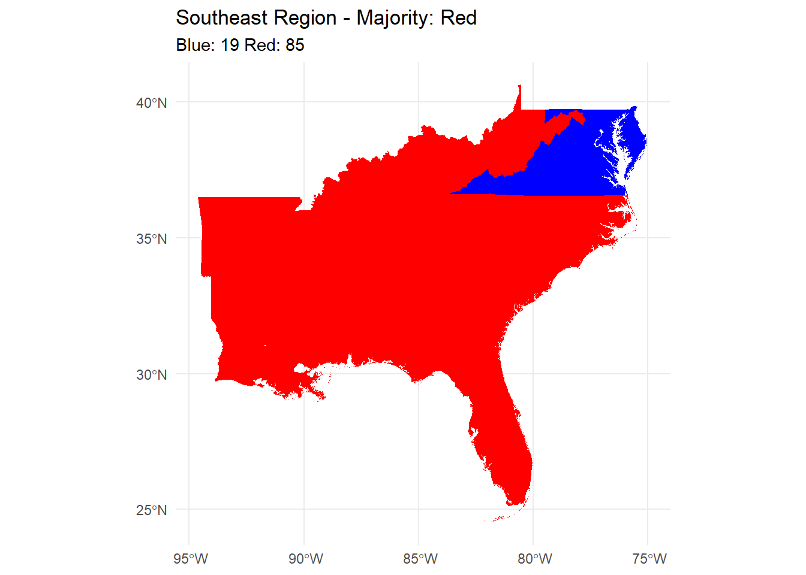
print(central_plot)
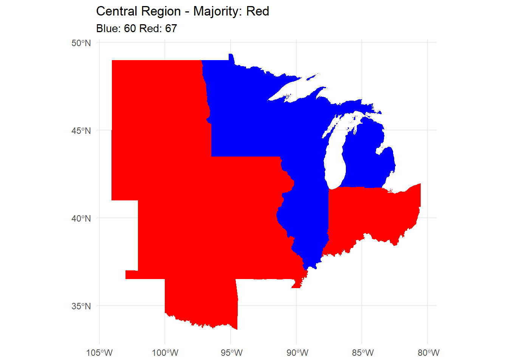
print(southwest_plot)
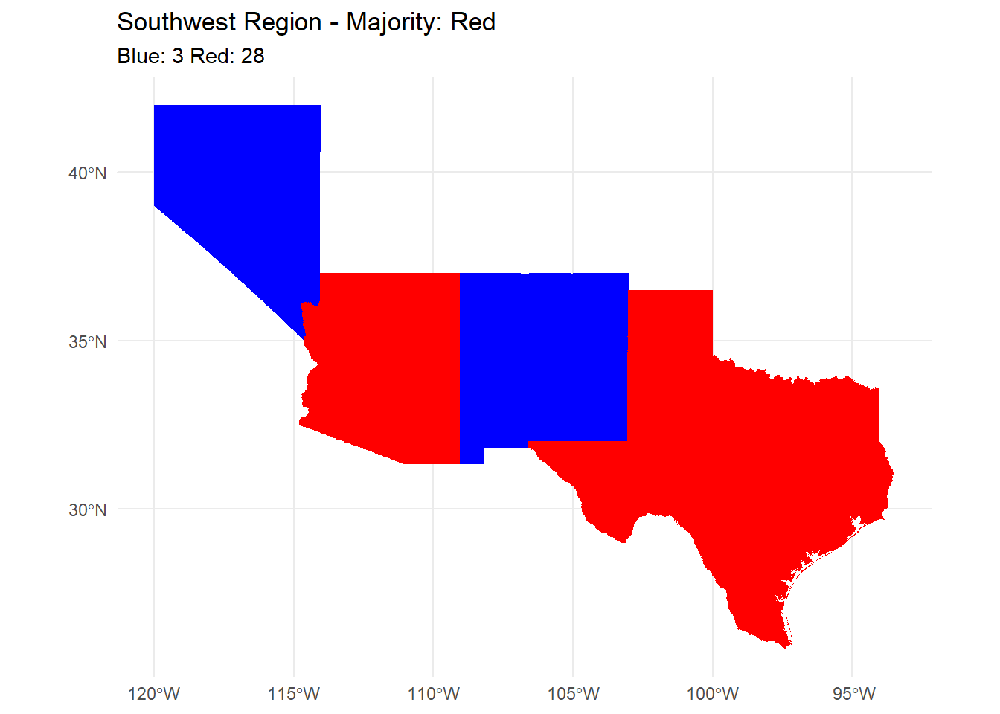
print(northwest_plot)
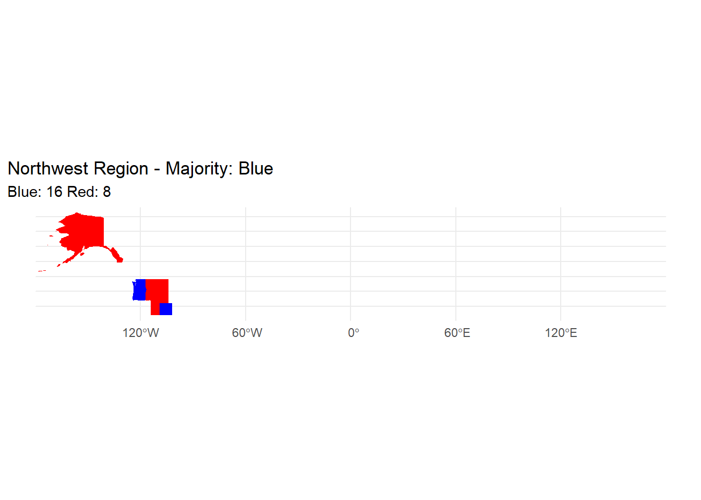
# Load necessary librarieslibrary(sf)library(ggplot2)library(dplyr)# Define the path to the shapefile for districtsshapefile_path <-"C:/Users/alien/OneDrive/Documents/STA9750-2024-FALL/Mini 03 Data/congress_shapefiles/congress_094/districtShapes/districts094.shp"# Load the shapefile for congressional districtsdistricts <-read_sf(shapefile_path)# Define 2020 blue and red statesblue_party_states_2020 <-c("California", "New York", "Washington", "Oregon", "Maryland", "Connecticut", "Delaware", "Hawaii", "Illinois", "Maine", "Massachusetts", "Michigan", "Minnesota", "Nevada", "New Jersey", "New Mexico", "Rhode Island", "Vermont", "Virginia", "Wisconsin", "Colorado", "Pennsylvania", "New Hampshire")red_party_states_2020 <-c("Texas", "Florida", "Georgia", "Arizona", "Ohio", "Alabama", "Alaska", "Arkansas", "Idaho", "Indiana", "Iowa", "Kansas", "Kentucky", "Louisiana", "Mississippi", "Missouri", "Montana", "Nebraska", "North Carolina", "North Dakota", "Oklahoma", "South Carolina", "South Dakota", "Tennessee", "Utah", "West Virginia", "Wyoming")# Add a color column to the districts based on the 2020 winning partydistricts$color <-ifelse(districts$STATENAME %in% blue_party_states_2020, "blue",ifelse(districts$STATENAME %in% red_party_states_2020, "red", NA))# Step 1: Aggregate districts into single state polygonsstates <- districts %>%group_by(STATENAME) %>%summarize(geometry =st_union(geometry), .groups ="drop")# Define regionsnortheast <-c("Maine", "New Hampshire", "Vermont", "Massachusetts", "Rhode Island", "Connecticut", "New York", "New Jersey", "Pennsylvania")southeast <-c("Delaware", "Maryland", "Virginia", "West Virginia", "Kentucky", "Tennessee", "North Carolina", "South Carolina", "Georgia", "Florida", "Alabama", "Mississippi")midwest <-c("Ohio", "Indiana", "Illinois", "Michigan", "Wisconsin", "Minnesota", "Iowa", "Missouri", "North Dakota", "South Dakota", "Nebraska", "Kansas")southwest <-c("Texas", "Oklahoma", "New Mexico", "Arizona")west <-c("Colorado", "Wyoming", "Montana", "Idaho", "Washington", "Oregon", "California", "Nevada", "Utah", "Alaska", "Hawaii")# Function to plot a regionplot_region <-function(region_states, title) { region_states_data <- states %>%filter(STATENAME %in% region_states)ggplot() +geom_sf(data = districts %>%filter(STATENAME %in% region_states), aes(fill = color), color =NA) +geom_sf(data = region_states_data, fill =NA, color ="#333333", size =0.7) +scale_fill_identity() +theme_minimal() +labs(title = title)}# Plot each regionplot_northeast <-plot_region(northeast, "Northeast Region - Party Distribution")plot_southeast <-plot_region(southeast, "Southeast Region - Party Distribution")plot_midwest <-plot_region(midwest, "Midwest Region - Party Distribution")plot_southwest <-plot_region(southwest, "Southwest Region - Party Distribution")plot_west <-plot_region(west, "Western Region - Party Distribution")# Display the plotsplot_northeast
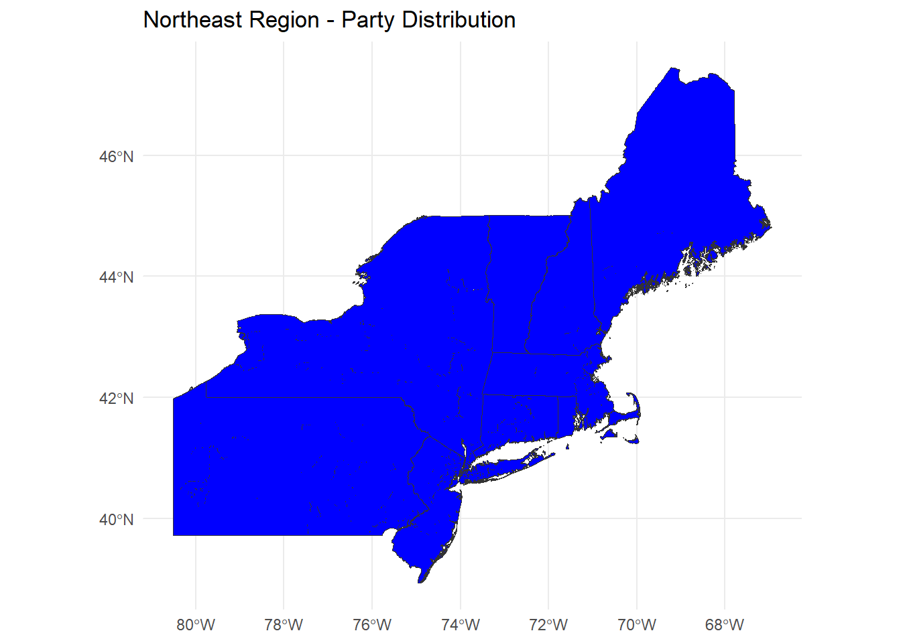
plot_southeast
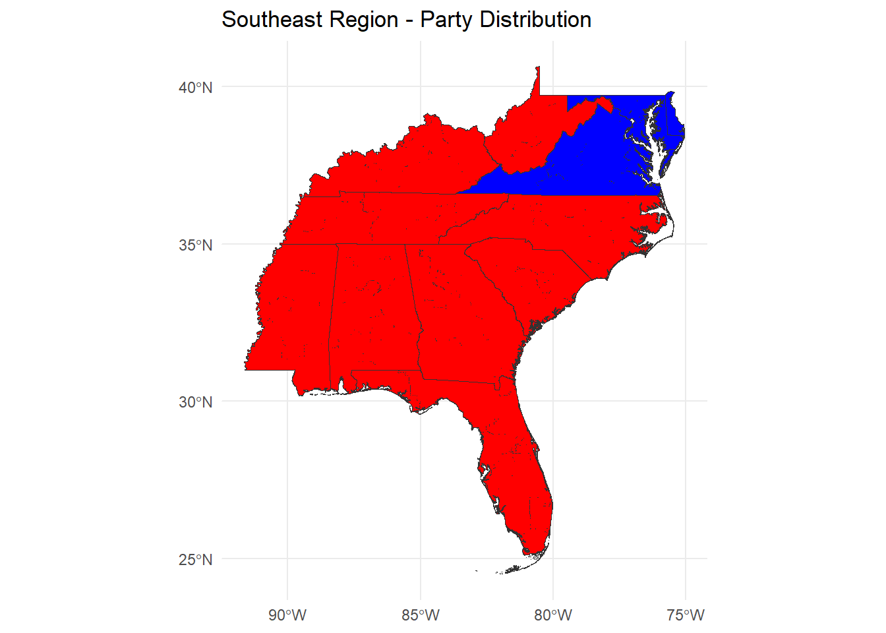
plot_midwest
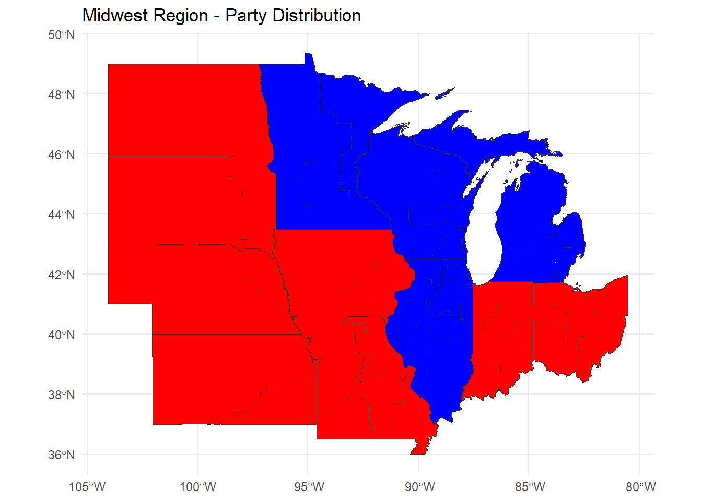
plot_southwest
plot_west
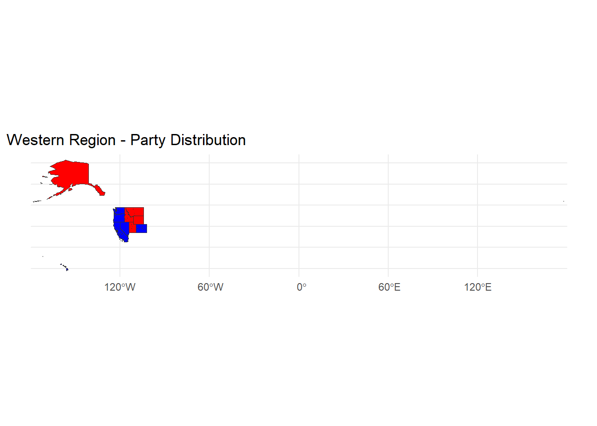
# Install necessary packages if not already installedif (!requireNamespace("sf", quietly =TRUE)) install.packages("sf")if (!requireNamespace("ggplot2", quietly =TRUE)) install.packages("ggplot2")if (!requireNamespace("dplyr", quietly =TRUE)) install.packages("dplyr")# Load necessary librarieslibrary(sf)library(ggplot2)library(dplyr)# Define the path to the shapefile (replace with your actual path)shapefile_path <-"C:/Users/alien/OneDrive/Documents/STA9750-2024-FALL/Mini 03 Data/congress_shapefiles/congress_094/districtShapes/districts094.shp"# Load the shapefiledistricts <-read_sf(shapefile_path)# Create a data frame for electoral voteselectoral_votes <-data.frame(STATENAME =c("Alabama", "Kentucky", "North Dakota", "Alaska", "Louisiana", "Ohio", "Arizona", "Maine", "Oklahoma", "Arkansas", "Maryland", "Oregon", "California", "Massachusetts", "Pennsylvania", "Colorado", "Michigan", "Rhode Island", "Connecticut", "Minnesota", "South Carolina", "Delaware", "Mississippi", "South Dakota", "District of Columbia", "Missouri", "Tennessee", "Florida", "Montana", "Texas", "Georgia", "Nebraska", "Utah", "Hawaii", "Nevada", "Vermont", "Idaho", "New Hampshire", "Virginia", "Illinois", "New Jersey", "Washington", "Indiana", "New Mexico", "West Virginia", "Iowa", "New York", "Wisconsin", "Kansas", "North Carolina", "Wyoming"),votes =c(9, 8, 3, 3, 8, 17, 11, 4, 7, 6, 10, 8, 54, 11, 19, 10, 15, 4, 7, 10, 9, 3, 6, 3, 3, 10, 11, 30, 4, 40, 16, 5, 6, 4, 6, 3, 4, 4, 13, 19, 14, 12, 11, 5, 4, 6, 28, 10, 6, 16, 3))# Ensure `STATENAME` in the shapefile is in the same format as the electoral_votes datadistricts$STATENAME <-as.character(districts$STATENAME)# Aggregate districts into single state polygonsstates <- districts %>%group_by(STATENAME) %>%summarize(geometry =st_union(geometry), .groups ="drop")# Merge electoral votes data with the state geometry datastates <- states %>%left_join(electoral_votes, by ="STATENAME")# Custom color palettecustom_palette <-c("#FFF9C4", "#FFE082", "#FFCA28", "#FFB300", "#FF8F00", "#F57C00", "#E65100")# Plot the US map with electoral votes by state# Alaska and Hawaii positioning is adjusted manuallyggplot() +geom_sf(data = states, aes(fill = votes), color ="grey30", size =0.2) +# Separate Alaska and Hawaii with custom transformationsgeom_sf(data = states %>%filter(STATENAME =="Alaska"),aes(fill = votes), color ="grey30", size =0.2) +coord_sf(crs =st_crs(5070), xlim =c(-170, -130), ylim =c(50, 72)) +# Move Alaskageom_sf(data = states %>%filter(STATENAME =="Hawaii"),aes(fill = votes), color ="grey30", size =0.2) +coord_sf(crs =st_crs(5070), xlim =c(-160, -154), ylim =c(18, 23)) +# Move Hawaiiscale_fill_gradientn(colors = custom_palette, na.value ="gray90", name ="Votes") +labs(title ="Number of Electoral Votes by State",subtitle ="Electoral votes for the 2024 election are allocated to states based on the 2020 Census." ) +theme_minimal(base_size =18) +# Increase base size for larger plottheme(plot.title =element_text(size =24, hjust =0.5),plot.subtitle =element_text(size =14, hjust =0.5),legend.position ="right" ) +theme(legend.title =element_text(size =14), legend.text =element_text(size =12)) +coord_sf(crs =st_crs(5070), expand =FALSE) # Adjust projection to show the continental US
year state state_po state_fips state_cen state_ic office
1 1976 ALABAMA AL 1 63 41 US PRESIDENT
2 1976 ALABAMA AL 1 63 41 US PRESIDENT
3 1976 ALABAMA AL 1 63 41 US PRESIDENT
4 1976 ALABAMA AL 1 63 41 US PRESIDENT
5 1976 ALABAMA AL 1 63 41 US PRESIDENT
6 1976 ALABAMA AL 1 63 41 US PRESIDENT
candidate party_detailed writein candidatevotes
1 CARTER, JIMMY DEMOCRAT FALSE 659170
2 FORD, GERALD REPUBLICAN FALSE 504070
3 MADDOX, LESTER AMERICAN INDEPENDENT PARTY FALSE 9198
4 BUBAR, BENJAMIN ""BEN"" PROHIBITION FALSE 6669
5 HALL, GUS COMMUNIST PARTY USE FALSE 1954
6 MACBRIDE, ROGER LIBERTARIAN FALSE 1481
totalvotes version notes party_simplified
1 1182850 20210113 NA DEMOCRAT
2 1182850 20210113 NA REPUBLICAN
3 1182850 20210113 NA OTHER
4 1182850 20210113 NA OTHER
5 1182850 20210113 NA OTHER
6 1182850 20210113 NA LIBERTARIAN
# Load necessary librarieslibrary(dplyr)library(ggplot2)library(usmap)library(maps)# Load your data (update with the actual path if needed)presidential_data <-read.csv("C:/Users/alien/OneDrive/Documents/STA9750-2024-FALL/Mini 03 Data/1976-2020-president.csv")# Filter data for the year 2020presidential_data_2020 <- presidential_data %>%filter(year ==2020)# Identify the winning party in each state by the highest percentage of votesmax_percent_rows <- presidential_data_2020 %>%group_by(state) %>%filter(candidatevotes ==max(candidatevotes)) %>%ungroup()# Extract states won by DemocratsBlue_states <- max_percent_rows %>%filter(party_simplified =="DEMOCRAT") %>%pull(state) %>%tolower() # Convert state names to lowercase to match `map_data`# Prepare the map data for ggplotmap_data <-map_data("state")map_data$fill <-ifelse(map_data$region %in% Blue_states, "blue", "red") # Color Democrats blue, others red# Plot the mapggplot() +geom_map(data = map_data, map = map_data,aes(x = long, y = lat, map_id = region, fill = fill),color ="white", size =0.25) +scale_fill_identity() +labs(title ="US Presidential Election Results by State - 2020",subtitle ="Blue: Democrat, Red: Republican") +theme_void() +theme(plot.title =element_text(hjust =0.5, size =16),plot.subtitle =element_text(hjust =0.5, size =12) )
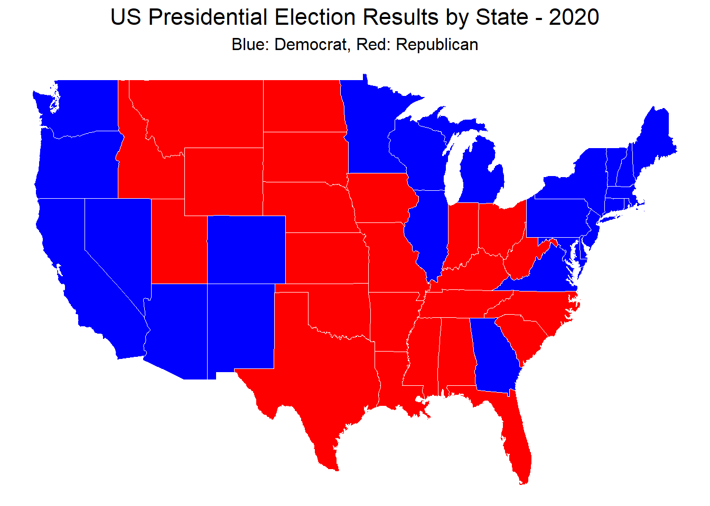
# Load necessary librarieslibrary(dplyr)library(ggplot2)library(maps)# Load your presidential election data (adjust the path as needed)presidential_data <-read.csv("C:/Users/alien/OneDrive/Documents/STA9750-2024-FALL/Mini 03 Data/1976-2020-president.csv")# Filter data for the year 2020presidential_data_2020 <- presidential_data %>%filter(year ==2020)# Calculate the percentage of votes each candidate received in each statepresidential_data_2020 <- presidential_data_2020 %>%group_by(state) %>%mutate(Percent = (candidatevotes / totalvotes) *100)# Identify the winning party in each state by the highest percentage of votesmax_percent_rows <- presidential_data_2020 %>%group_by(state) %>%filter(Percent ==max(Percent)) %>%ungroup()# Extract states won by Democrats and RepublicansBlue_states <- max_percent_rows %>%filter(party_simplified =="DEMOCRAT") %>%pull(state) %>%tolower()Red_states <- max_percent_rows %>%filter(party_simplified =="REPUBLICAN") %>%pull(state) %>%tolower()# Prepare states and their percentages for mappingstates_and_percentages <-data.frame(region =tolower(max_percent_rows$state),percent = max_percent_rows$Percent)# Create map data with fill color based on the party and transparency based on percentagemap_data <-map_data("state")map_data$fill <-ifelse(map_data$region %in% Blue_states, "blue",ifelse(map_data$region %in% Red_states, "red", "purple"))# Join vote percentage data with map datamap_data <-left_join(map_data, states_and_percentages, by ="region")# Plot the mapggplot() +geom_map(data = map_data, map = map_data,aes(x = long, y = lat, map_id = region, fill = fill, alpha = percent),color ="white", size =0.25) +scale_fill_manual(values =c("blue"="blue", "red"="red", "purple"="purple"),labels =c("Democrat", "Republican", "Other"),drop =FALSE) +labs(title ="How States Voted in the 2020 Presidential Election") +theme(plot.title =element_text(hjust =0.5),plot.background =element_rect(fill ="white", color ="white"),panel.background =element_rect(fill ="white"),axis.title =element_blank(),axis.text =element_blank(),axis.ticks =element_blank(),legend.position ="none") +guides(fill =guide_legend(title ="Party"))
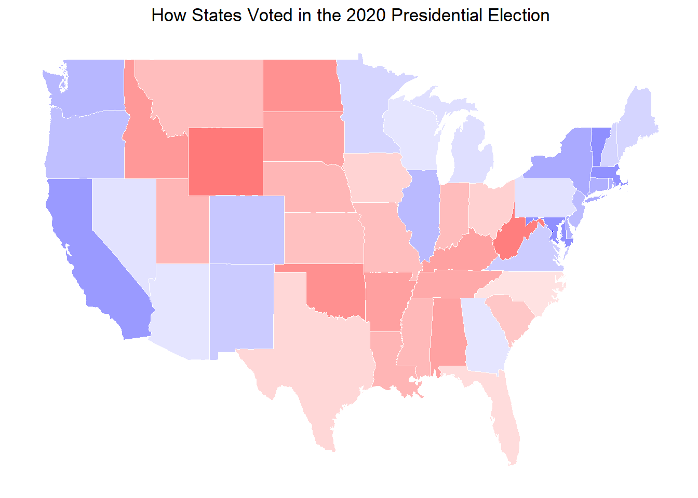
# Install necessary packages if not already installedif (!requireNamespace("sf", quietly =TRUE)) install.packages("sf")if (!requireNamespace("ggplot2", quietly =TRUE)) install.packages("ggplot2")if (!requireNamespace("dplyr", quietly =TRUE)) install.packages("dplyr")# Load necessary librarieslibrary(sf)library(ggplot2)library(dplyr)# Define the path to the shapefile (replace with your actual path)shapefile_path <-"C:/Users/alien/OneDrive/Documents/STA9750-2024-FALL/Mini 03 Data/congress_shapefiles/congress_094/districtShapes/districts094.shp"# Load the shapefiledistricts <-read_sf(shapefile_path)# Create a data frame for electoral voteselectoral_votes <-data.frame(STATENAME =c("Alabama", "Kentucky", "North Dakota", "Alaska", "Louisiana", "Ohio", "Arizona", "Maine", "Oklahoma", "Arkansas", "Maryland", "Oregon", "California", "Massachusetts", "Pennsylvania", "Colorado", "Michigan", "Rhode Island", "Connecticut", "Minnesota", "South Carolina", "Delaware", "Mississippi", "South Dakota", "District of Columbia", "Missouri", "Tennessee", "Florida", "Montana", "Texas", "Georgia", "Nebraska", "Utah", "Hawaii", "Nevada", "Vermont", "Idaho", "New Hampshire", "Virginia", "Illinois", "New Jersey", "Washington", "Indiana", "New Mexico", "West Virginia", "Iowa", "New York", "Wisconsin", "Kansas", "North Carolina", "Wyoming"),votes =c(9, 8, 3, 3, 8, 17, 11, 4, 7, 6, 10, 8, 54, 11, 19, 10, 15, 4, 7, 10, 9, 3, 6, 3, 3, 10, 11, 30, 4, 40, 16, 5, 6, 4, 6, 3, 4, 4, 13, 19, 14, 12, 11, 5, 4, 6, 28, 10, 6, 16, 3))# Ensure `STATENAME` in the shapefile is in the same format as the electoral_votes datadistricts$STATENAME <-as.character(districts$STATENAME)# Aggregate districts into single state polygonsstates <- districts %>%group_by(STATENAME) %>%summarize(geometry =st_union(geometry), .groups ="drop")# Merge electoral votes data with the state geometry datastates <- states %>%left_join(electoral_votes, by ="STATENAME")# Custom color palette for electoral votescustom_palette <-c("#FFF9C4", "#FFE082", "#FFCA28", "#FFB300", "#FF8F00", "#F57C00", "#E65100")# Separate data for Alaska and Hawaii for manual repositioningcontinental_states <- states %>%filter(!STATENAME %in%c("Alaska", "Hawaii"))alaska <- states %>%filter(STATENAME =="Alaska") %>%st_transform(crs =st_crs(5070))hawaii <- states %>%filter(STATENAME =="Hawaii") %>%st_transform(crs =st_crs(5070))# Plot the US map with electoral votes by state, adjusting Alaska and Hawaiiggplot() +geom_sf(data = continental_states, aes(fill = votes), color ="grey30", size =0.2) +# Alaska repositioned in a separate viewportgeom_sf(data = alaska, aes(fill = votes), color ="grey30", size =0.2) +coord_sf(xlim =c(-2400000, -1200000), ylim =c(2100000, 3500000), datum =NA) +# Hawaii repositioned in a separate viewportgeom_sf(data = hawaii, aes(fill = votes), color ="grey30", size =0.2) +coord_sf(xlim =c(5000000, 5500000), ylim =c(1000000, 1600000), datum =NA) +scale_fill_gradientn(colors = custom_palette, na.value ="gray90", name ="Votes") +labs(title ="Number of Electoral Votes by State",subtitle ="Electoral votes for the 2024 election are allocated to states based on the 2020 Census." ) +theme_minimal(base_size =18) +# Increase base size for larger plottheme(plot.title =element_text(size =24, hjust =0.5),plot.subtitle =element_text(size =14, hjust =0.5),legend.position ="right" ) +theme(legend.title =element_text(size =14), legend.text =element_text(size =12)) +coord_sf(crs =st_crs(5070), expand =FALSE) # Adjust projection to show the continental US
# Install necessary packages if not already installedif (!requireNamespace("choroplethr", quietly =TRUE)) install.packages("choroplethr")if (!requireNamespace("gganimate", quietly =TRUE)) install.packages("gganimate")if (!requireNamespace("gifski", quietly =TRUE)) install.packages("gifski")library(choroplethr)library(dplyr)library(tidyr)library(ggplot2)library(gganimate)library(maps)# Load election datadata("df_president_ts", package ="choroplethr")# Prepare election data for animationus <-map_data("state")dev.off()# Filter for specific election yearselection_years <-c(2000, 2004, 2008, 2012, 2016, 2020)# Prepare and clean the elections data to ensure one row per state and yearelections <- df_president_ts %>%gather(year, winner, `1789`:`2012`) %>%filter(as.numeric(year) %in% election_years) %>%# Filter for specific election yearsmutate(year =as.integer(year)) %>%group_by(year, region) %>%slice(1) %>%# Keep only the first entry per state and year if duplicates existungroup() %>%mutate(party =case_when( winner %in%c("SR", "I", "AI", "PR") ~"Third Party", winner =="D"~"Democrat", winner =="R"~"Republican",TRUE~NA_character_ )) %>%right_join(us, by =c("region"="region"))# Create the animated plotp <-ggplot(data = elections, aes(x = long, y = lat, group = group, fill = party)) +geom_polygon(color ="#f5f5f2") +coord_map("albers", lat0 =30, lat1 =40) +scale_fill_manual(values =c("Democrat"="#4169E1", "Republican"="#B91C1C", "Third Party"="#FFA500"), na.value ="gray70", name ="Winning Party") +labs(title ="US Presidential Election Results: {closest_state}", fill ="Winning Party") +theme_void() +theme(plot.title =element_text(hjust =0.5, size =18))# Animate with transition by year using discrete statesp_animated <- p +transition_states(year, transition_length =2, state_length =1) +ease_aes('linear')# Render the animationanimate(p_animated, fps =1, nframes =length(election_years) *5, width =800, height =600, renderer =gifski_renderer())